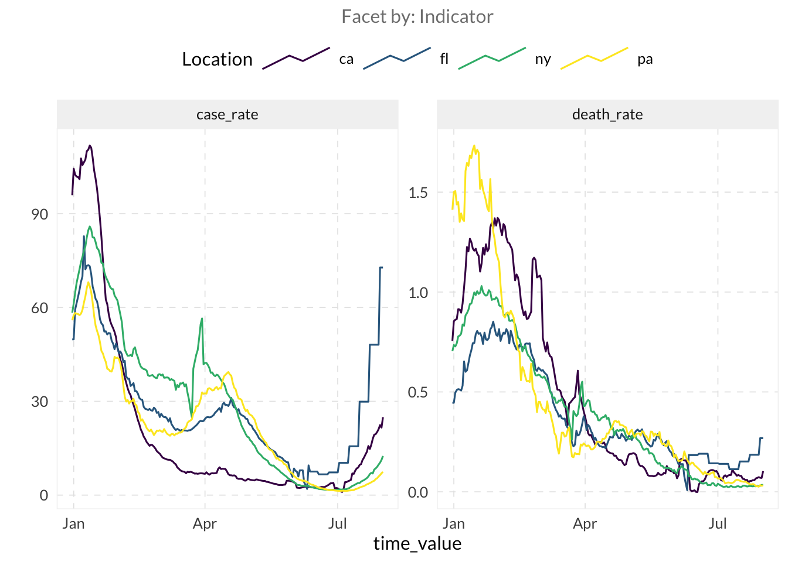
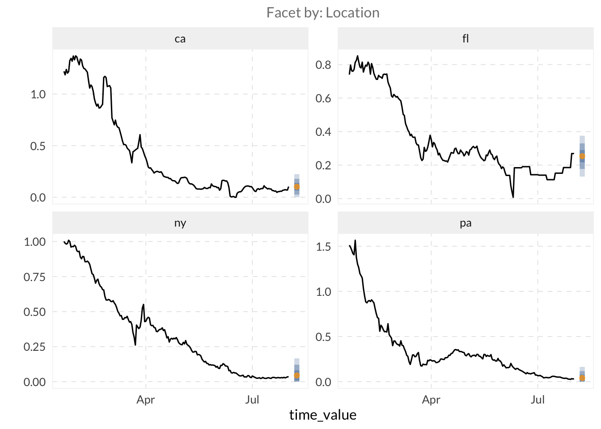
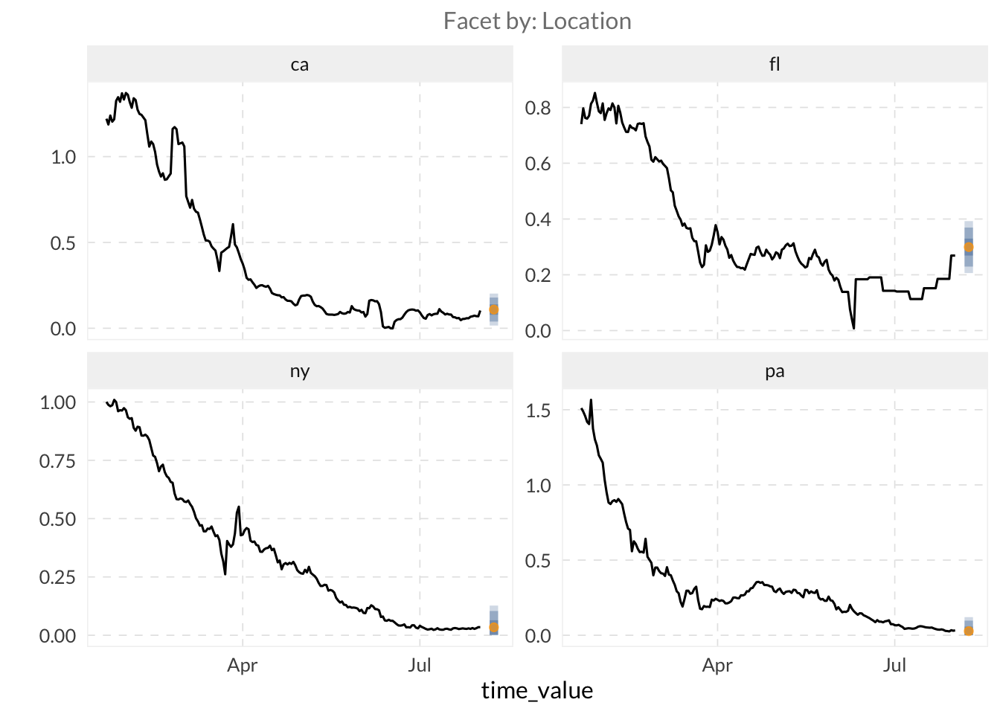
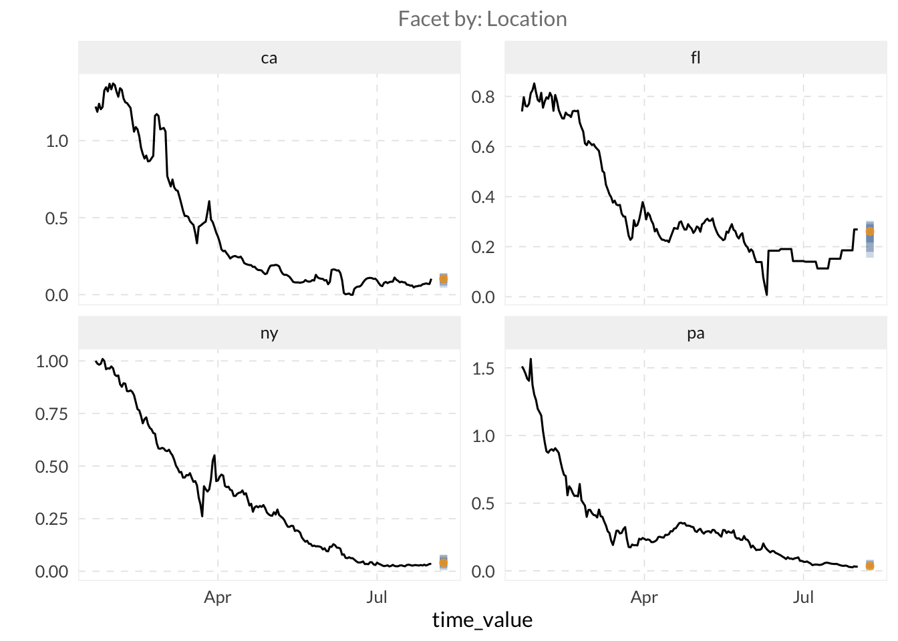
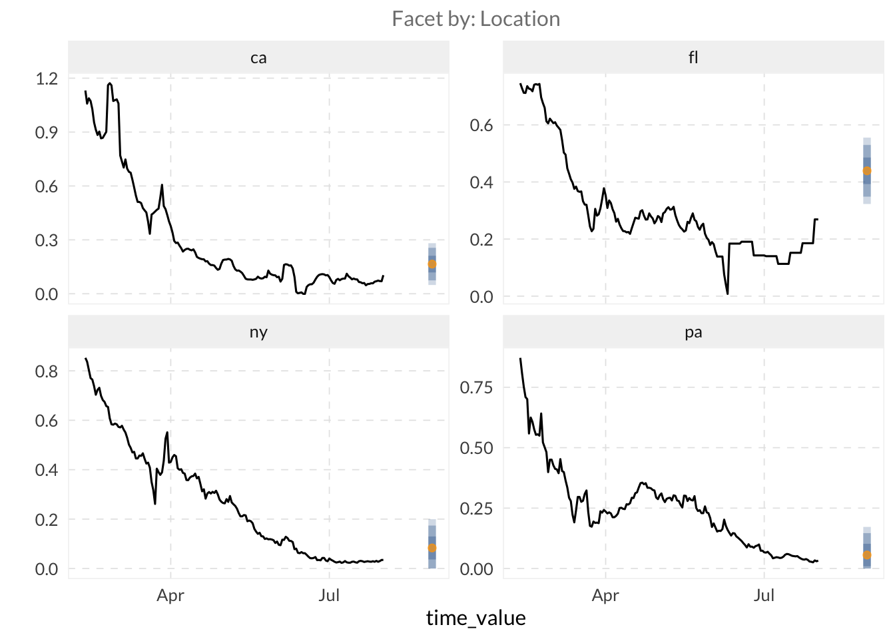
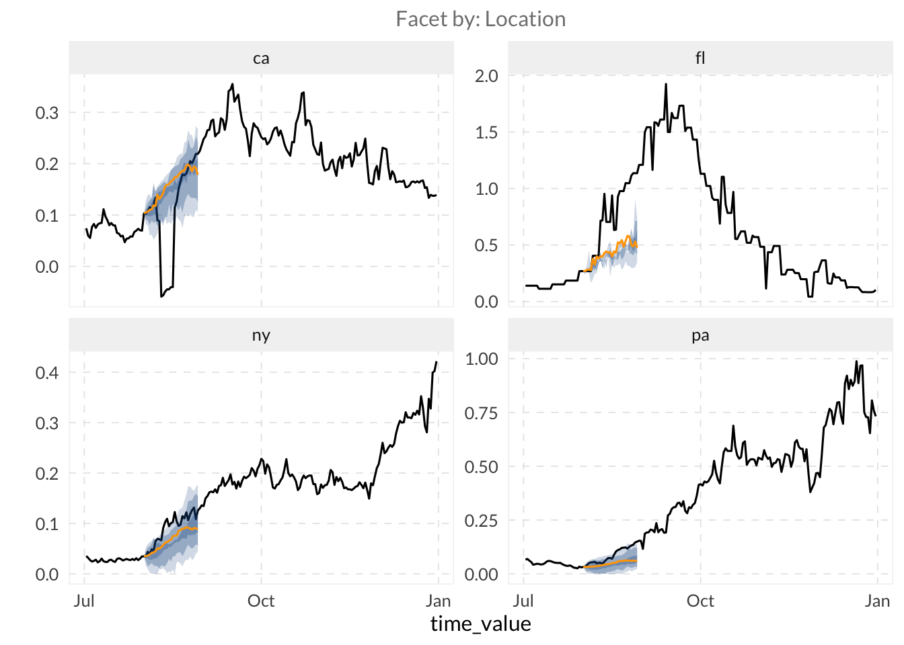

if (!requireNamespace("pak", quietly = TRUE)) install.packages("pak")
if (!requireNamespace("InsightNetApr26", quietly = TRUE)) {
pak::pkg_install("cmu-delphi/InsightNet-apr-2026/InsightNetApr26")
}
InsightNetApr26::verify_setup()
library(epidatr)
library(epiprocess)
library(epipredict)
library(dplyr)
library(ggplot2)
library(parsnip)MINI-PROJECT 3: Customizing models
Load packages
The {InsightNetApr26} package ensures all required Delphi tools and their correct versions/branches are installed.
3.1 Basic Modelling
⭐ We will use the built-in covid_case_death_rates dataset provided by the epidatasets package, which automatically loads with the other Delphi tools.
Hint: You can get a partial view of the dataset by entering
covid_case_death_ratesin the R console.
- Filter out the observations after August 1, 2021, to create a training set.
# We define our forecast date and filter the data to only include
# what was available at that time.
forecast_date <- as.Date("2021-08-01")
training_set <- covid_case_death_rates |>
filter(time_value <= forecast_date)ⓘ In a real-world scenario, reporting delays mean that recent data is often missing or subject to revision. If you accidentally trained your model on data that wasn’t actually available at the time of the forecast, how would this “data leakage” give you a misleading impression of your model’s accuracy?
- Filter to four states of your choosing and use
autoplot()to explore thedeath_rateandcase_ratecolumns.
# Pick four states and visualize the trends
target_states <- c("ca", "fl", "ny", "pa")
training_set <- training_set |>
filter(geo_value %in% target_states)
autoplot(training_set, death_rate, case_rate) 
- Let’s fit an autoregressive model using lagged values of the
death_ratecolumn as features witharx_forecaster()on our training set. > Hint: you need to provide the dataset and the outcome argument toarx_forecaster()
# Fit a default AR model
fcst_ar <- arx_forecaster(
training_set,
outcome = "death_rate"
)- When you run a forecaster, it returns an object containing several useful components.
- Use
autoplot(your_forecast)for a quick plot. - Use
your_forecast$predictionson the object returned by the forecast to view the results. Usepivot_quantiles_wider()to expand the quantile distribution column into individual columns. - Use
your_forecast$epi_workflowto access the underlying model. To see exactly how much weight the model gave to each lag, pass this object tohardhat::extract_fit_engine().
- Use
# Quick plot
autoplot(fcst_ar)
# Inspect predictions and pivot quantiles
fcst_ar$predictions |>
pivot_quantiles_wider(.pred_distn) |>
head()# A tibble: 4 × 11
geo_value .pred forecast_date target_date `0.05` `0.1` `0.25` `0.5` `0.75`
<chr> <dbl> <date> <date> <dbl> <dbl> <dbl> <dbl> <dbl>
1 ca 0.102 2021-08-01 2021-08-08 0 0.0256 0.0653 0.102 0.138
2 fl 0.253 2021-08-01 2021-08-08 0.131 0.177 0.217 0.253 0.290
3 ny 0.0447 2021-08-01 2021-08-08 0 0 0.00811 0.0447 0.0813
4 pa 0.0413 2021-08-01 2021-08-08 0 0 0.00471 0.0413 0.0779
# ℹ 2 more variables: `0.9` <dbl>, `0.95` <dbl># Access model weights
hardhat::extract_fit_engine(fcst_ar$epi_workflow)
Call:
stats::lm(formula = ..y ~ ., data = data)
Coefficients:
(Intercept) lag_0_death_rate lag_7_death_rate lag_14_death_rate
0.01513 0.82169 0.26770 -0.21301 ⓘ How heavily does the model weigh data from exactly one week ago compared to yesterday? Try running
hardhat::extract_fit_engine(your_forecast$epi_workflow)to examine the fitted coefficients for each lag. Which lag contributes the most to the forecast?
⚔️ Compare your autoregressive model fitted with arx_forecaster() to a simple model. The flatline forecaster is a common baseline that assumes the future will be exactly the last observed value, with uncertainty that grows as the forecast horizon grows. Fit a flatline model using flatline_forecaster() and examine the predictions to see how the quantiles behave.
# Fit a flatline baseline model
fcst_flat <- flatline_forecaster(
training_set,
outcome = "death_rate"
)
# Observe how quantiles widen over time
fcst_flat$predictions |>
pivot_quantiles_wider(.pred_distn)# A tibble: 4 × 11
geo_value .pred forecast_date target_date `0.05` `0.1` `0.25` `0.5` `0.75`
<chr> <dbl> <date> <date> <dbl> <dbl> <dbl> <dbl> <dbl>
1 ca 0.103 2021-08-01 2021-08-08 0 0 0.0561 0.103 0.151
2 fl 0.269 2021-08-01 2021-08-08 0.0876 0.152 0.222 0.269 0.316
3 ny 0.0347 2021-08-01 2021-08-08 0 0 0 0.0347 0.0820
4 pa 0.0324 2021-08-01 2021-08-08 0 0 0 0.0324 0.0797
# ℹ 2 more variables: `0.9` <dbl>, `0.95` <dbl>3.2 Model Customization
⭐ While “canned” forecasters such as arx_forecaster() are useful for establishing baselines, you will often want to customize your models. Use the arx_forecaster() arguments to customize your model.
- So far, we have only used the outcome itself as a predictor. However, many signals serve as leading indicators. For example, changes in case rates often precede changes in death rates. Use both
case_rateanddeath_rateas predictors ofdeath_rateinarx_forecaster(). [Hint: use thepredictorsargument.]
# Use multiple signals to improve the forecast
fcst_multi <- arx_forecaster(
training_set,
outcome = "death_rate",
predictors = c("case_rate", "death_rate")
)
fcst_multi
autoplot(fcst_multi)
- By default,
arx_forecaster()uses linear regression. Swap this forquantile_reg().
# Use Quantile Regression for better uncertainty estimation
fcst_qr <- arx_forecaster(
training_set,
outcome = "death_rate",
trainer = quantile_reg()
)
fcst_qr
autoplot(fcst_qr)
- Further customize your model by modifying the
arx_args_list()arguments via theargs_listparameter inarx_forecaster().
Hint: you can access the
arx_args_list()documentation by typing?arx_args_listin R.
- Use the
lagsargument inarx_args_list()to specify provide a vector of integers representing the historical days for each indicator.
Hint:
lags = c(0, 7, 14)tells the model to use data from today, one week ago, and two weeks ago as predictors. If you are using multiple indicators as predictors, you can provide a list of vectors (e.g.,lags = list(c(0, 7), c(0, 14))) where each vector corresponds to one of your indicators.
- Set the
aheadargument to 28.
# Customize lags and horizon
custom_args <- arx_args_list(
lags = list(c(0, 7, 14), c(0, 7, 14)), # Lags for case_rate and death_rate
ahead = 28
)
fcst_custom <- arx_forecaster(
training_set,
outcome = "death_rate",
predictors = c("case_rate", "death_rate"),
args_list = custom_args
)
autoplot(fcst_custom)
⚔️ Create a forecast trajectory over a range of dates and plot it with autoplot(). This creates a full trajectory showing how uncertainty grows with the horizon.
Hint: see this example on creating models for multiple ahead arguments: cmu-delphi.github.io/epipredict/articles/epipredict.html#generating-multiple-aheads
# We loop over horizons to create a trajectory (0 to 28 days)
all_canned_results <- lapply(0:28, \(days_ahead) {
arx_forecaster(
training_set,
outcome = "death_rate",
predictors = c("case_rate", "death_rate"),
trainer = quantile_reg(),
args_list = arx_args_list(
lags = list(c(0, 1, 2, 3, 7, 14), c(0, 7, 14)),
ahead = days_ahead
)
)
})
# Extract and combine predictions from all horizons
results <- bind_rows(lapply(all_canned_results, \(x) x$predictions))
autoplot(
object = all_canned_results[[1]]$epi_workflow,
predictions = results,
observed_response = covid_case_death_rates |>
filter(geo_value %in% target_states, time_value > "2021-07-01")
)
3.3 Use Delphi data in other model types
⭐ We will use arx_classifier() to predict disease growth categories. This model doesn’t just predict a value, but it predicts the probability that the growth rate falls into specific categories.
- Create a classifier to predict whether
death_rateis<= 0.01or> 0.01usingcase_rateanddeath_rateas predictors.
Hint: to configure the classifier, we use
arx_class_args_list()as input in theargs_listargument. The key parameter isbreaks, which defines the thresholds for our categories.
# Categorical prediction: is death_rate low (<= 0.01) or high (> 0.01)?
classifier_fcst <- arx_classifier(
training_set,
outcome = "death_rate",
predictors = c("case_rate", "death_rate"),
args_list = arx_class_args_list(
breaks = 0.01,
ahead = 7
)
)
# View the classification probabilities
classifier_fcst$predictions |>
head()# A tibble: 4 × 4
geo_value .pred_class forecast_date target_date
<chr> <fct> <date> <date>
1 ca (0.01, Inf] 2021-08-01 2021-08-08
2 fl (0.01, Inf] 2021-08-01 2021-08-08
3 ny (0.01, Inf] 2021-08-01 2021-08-08
4 pa (0.01, Inf] 2021-08-01 2021-08-08